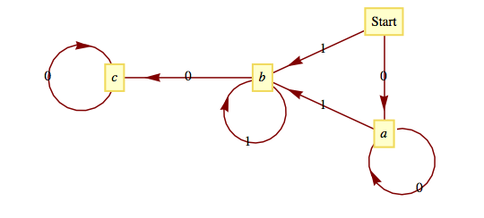

Ken Levasseur, Al Doerr, Michiel Smid, Oscar Levin, Charles M. Grinstead, J. Laurie Snell, Eric Lehman, F. Thomson Leighton, Albert R Meyer, Jeff Erickson, Kenneth P. Bogart, Carol Chritchlow, David Eck, OpenDSA Project, L.J. Miller
Recall that we introduced directed graphs in Chapter 10 as a tool to visualize relations on a set. Here is a formal definition.
Definition15.1.1.Simple Directed Graph.
A simple directed graph consists of a nonempty set of vertices, \(V\text{,}\) and a set of edges, \(E\text{,}\) that is a subset of the set \(V
\times V\text{.}\)
Note15.1.2.Some Terminology and Comments.
Each edge is an ordered pair of elements from the vertex set. The first entry is the initial vertex of the edge and the second entry is the terminal vertex. Despite the set terminology in this definition, we often think of a graph as a picture, an aid in visualizing a situation. In Chapter 6, we introduced this concept to help understand relations on sets. Although those relations were principally of a mathematical nature, it remains true that when we see a graph, it tells us how the elements of a set are related to one another. We have chosen not to allow a graph with an empty vertex set, the so-called empty graph. There are both advantages and disadvantages to allowing the empty graph, so you may encounter it in other references.
Example15.1.3.A Simple Directed Graph.
Figure 15.1.4 is an example of a simple directed graph. In set terms, this graph is \((V, E)\text{,}\) where \(V = \{s, a, b\}\) and \(E = \{(s, a), (s, b), (a, b), (b, a), (b,b)\}\text{.}\) Note how each edge is labeled either 0 or 1. There are often reasons for labeling even simple graphs. Some labels are to help make a graph easier to discuss; others are more significant. We will discuss the significance of the labels on this graph later.
Figure15.1.4.A directed graph
In certain cases there may be a need for more than one edge between two vertices, and we need to expand the class of directed graphs.
Definition15.1.5.Multigraph.
A multigraph is a set of vertices \(V\) with a set of edges that can contain more than one edge between the vertices.
One important point to keep in mind is that if we identify a graph as being a multigraph, it isn’t necessary that there are two or more edges between some of the vertices. It is only just allowed. In other words, every simple graph is a multigraph. This is analogous to how a rectangle is a more general geometric figure than a square, but a square is still considered a rectangle.
Example15.1.6.A Multigraph.
A common occurrence of a multigraph is a road map. The cities and towns on the map can be thought of as vertices, while the roads are the edges. It is not uncommon to have more than one road connecting two cities. In order to give clear travel directions, we name or number roads so that there is no ambiguity. We use the same method to describe the edges of the multigraph in Figure 15.1.7. There is no question what \(e3\) is; however, referring to the edge \((2, 3)\) would be ambiguous.
Figure15.1.7.A directed multigraph
There are cases where the order of the vertices is not significant and so we use a different mathematical model for this situation:
Definition15.1.8.Undirected Graph.
An undirected graph consists of a set \(V\text{,}\) called a vertex set, and a set \(E\) of two-element subsets of \(V\text{,}\) called the edge set. The two-element subsets are drawn as lines connecting the vertices. It is customary to not allow “self loops” in undirected graphs.
Example15.1.9.An Undirected Graph.
A network of computers can be described easily using a graph. Figure 15.1.10 describes a network of five computers, \(a\text{,}\)\(b\text{,}\)\(c\text{,}\)\(d\text{,}\) and \(e\text{.}\) An edge between any two vertices indicates that direct two-way communication is possible between the two computers. Note that the edges of this graph are not directed. This is due to the fact that the relation that is being displayed is symmetric (i.e., if \(X\) can communicate with \(Y\text{,}\) then \(Y\) can communicate with \(X\)). Although directed edges could be used here, it would simply clutter the graph.
Figure15.1.10.Communications Map
Figure15.1.11.Island Road Map
This undirected graph, in set terms, is \(V = \{a, b, c, d, e\}\) and \(E =
\{\{a, b\}, \{a, d\}, \{b, c\}, \{b, d\}, \{c, e\}, \{b, e\}\}\)
There are several other situations for which this graph can serve as a model. One of them is to interpret the vertices as cities and the edges as roads, an abstraction of a map such as the one in Figure 15.1.11 . Another interpretation is as an abstraction of the floor plan of a house. See Exercise 15.1.5.11. Vertex \(a\) represents the outside of the house; all others represent rooms. Two vertices are connected if there is a door between them.
Definition15.1.12.Complete Undirected Graph.
A complete undirected graph on \(n\) vertices is an undirected graph with the property that each pair of distinct vertices are connected to one another. Such a graph is usually denoted by \(K_n\text{.}\)
Example15.1.13.A Labeled Graph.
A flowchart is a common example of a simple graph that requires labels for its vertices and some of its edges. Figure 15.1.14 is one such example that illustrates how many problems are solved.
Figure15.1.14.A flow chart - an example of a labeled graph
At the start of the problem-solving process, we are at the vertex labeled “Start” and at the end (if we are lucky enough to have solved the problem) we will be at the vertex labeled “End.” The sequence of vertices that we pass through as we move from “Start” to “End” is called a path. The “Start” vertex is called the initial vertex of the path, while the “End” is called the final, or terminal, vertex. Suppose that the problem is solved after two attempts; then the path that was taken is \(\text{Start}, R, A, Q, L, A, Q, \text{End}\text{.}\) An alternate path description would be to list the edges that were used: \(1, 2, 3,
\text{No}, 4, 3, \text{Yes}\text{.}\) This second method of describing a path has the advantage of being applicable for multigraphs. On the graph in Figure 15.1.7, the vertex list \(1,2,3,4,3\) does not clearly describe a path between 1 and 3, but \(e_1,e_4, e_6, e_7\) is unambiguous.
Note15.1.15.A Summary of Path Notation and Terminology.
If \(x\) and \(y\) are two vertices of a graph, then a path between \(x\) and \(y\) describes a motion from \(x\) and \(y\) along edges of the graph. Vertex \(x\) is called the initial vertex of the path and \(y\) is called the terminal vertex. A path between \(x\) and \(y\) can always be described by its edge list, the list of edges that were used: \(\left(e_1, e_2,
\ldots , e_n\right)\text{,}\) where: (1) the initial vertex of \(e_1\) is \(x\text{;}\) (2) the terminal vertex of \(e_i\) is the initial vertex of \(e_{i+1}\text{,}\)\(i
= 1, 2, \ldots , n - 1\text{;}\) and (3) the terminal vertex of \(e_n\) is \(y\text{.}\) The number of edges in the edge list is the path length. A path on a simple graph can also be described by a vertex list. A path of length \(n\) will have a list of \(n + 1\) vertices \(v_0=x\text{,}\)\(v_1\text{,}\)\(v_2,\ldots ,v_n=y\text{,}\) where, for \(k = 0,1,2,\ldots , n-1\text{,}\)\(\left(v_k,v_{k+1}\right)\) is an edge on the graph. A circuit is a path that terminates at its initial vertex.
Suppose that a path between two vertices has an edge list \((e_1, e_2 , . . . ,e_n)\text{.}\) A subpath of this graph is any portion of the path described by one or more consecutive edges in the edge list. For example, \((3, \textrm{No}, 4)\) is a subpath of \((1,2,3, \textrm{No}, 4, 3, \text{Yes})\text{.}\) Any path is its own subpath; however, we call it an improper subpath of itself. All other nonempty subpaths are called proper subpaths.
A path or circuit is simple if it contains no proper subpath that is a circuit. This is the same as saying that a path or circuit is simple if it does not visit any vertex more than once except for the common initial and terminal vertex in the circuit. In the problem-solving method described in Figure 15.1.14, the path that you take is simple only if you reach a solution on the first try.
Subsection15.1.2Subgraphs
Intuitively, you could probably predict what the term “subgraph” means. A graph contained within a graph, right? But since a graph involves two sets, vertices and edges, does it involve a subset of both of these sets, or just one of them? The answer is it could be either. There are different types of subgraphs. The two that we will define below will meet most of our future needs in discussing the theory of graphs.
Definition15.1.16.Subgraph.
Let \(G=(V,E)\) be a graph of any kind: directed, directed multigraph, or undirected. \(G'=(V',E')\) is a subgraph of \(G\) if \(V' \subseteq V\) and \(e \in E'\) only if \(e \in E\) and the vertices of \(e\) are in \(V'\text{.}\) You create a subgraph of \(G\) by removing zero or more vertices and all edges that include the removed vertices and then you possibly remove some other edges.
If the only removed edges are those that include the removed vertices, then we say that \(G'\) is an induced subgraph. Finally, \(G'\) is a spanning subgraph of \(G\) if \(V' = V\text{,}\) or, in other words, no vertices are removed from \(G\text{,}\) only edges.
Example15.1.17.Some subgraphs.
Consider the graph, \(G\text{,}\) in the top row of Figure 15.1.18. The other three graphs in that figure are all subgraphs of \(G\text{.}\) The graph in the bottom left was created by first removing vertex 5 and all edges connecting it. In addition, we have removed the edge \(\{1,4\}\text{.}\) That removed edge disqualifies the graph from being an induced subgraph. The graphs in the bottom center and right are both spanning subgraphs. The one on the bottom right is a tree, and is referred to as a spanning subtree. Spanning subtrees will be discussed in Section 16.2.
Figure15.1.18.A graph and a few of its subgraphs
One set of subgraphs of any graph is the connected components of a graph. For simplicity, we will define them for undirected graphs. Given a graph \(G=(V,E)\text{,}\) consider the relation “is connected to” on \(V\text{.}\) We interprete this relation so that each vertex is connected to itself, and any two distinct vertices are related if there is a path along edges of the graph from one to the other. It shouldn’t be too difficult to convince yourself that this is an equivalence relation on \(V\text{.}\)
Definition15.1.19.Connected Component.
Given a graph \(G=(V,E)\text{,}\) let \(C\) be the relation “is connected to” on \(V\text{.}\) Then the connected components of \(G\) are the induced subgraphs of \(G\) each with a vertex set that is an equivalence class with respect to \(C\text{.}\)
Example15.1.20.
If you ignore the duplicate names of vertices in the four graphs of Figure 15.1.18, and consider the whole figure as one large graph, then there are four connected components in that graph. It’s as simple as that! It’s harder to describe precisely than to understand the concept.
From the examples we’ve seen so far, we can see that although a graph can be defined, in short, as a collection of vertices and edges, an integral part of most graphs is the labeling of the vertices and edges that allows us to interpret the graph as a model for some situation. We continue with a few more examples to illustrate this point.
Example15.1.21.A Graph as a Model for a Set of Strings.
Suppose that you would like to mechanically describe the set of strings of 0’s and 1’s having no consecutive 1’s. One way to visualize a string of this kind is with the graph in Figure 15.1.4. Consider any path starting at vertex \(s\text{.}\) If the label on each graph is considered to be the output to a printer, then the output will have no consecutive 1’s. For example, the path that is described by the vertex list \((s,a, b, b, a, b, b, a, b)\) would result in an output of \(10010010\text{.}\) Conversely, any string with no consecutive 1’s determines a path starting at s.
Example15.1.22.A Tournament Graph.
Suppose that four teams compete in a round-robin sporting event; that is, each team meets every other team once, and each game is played until a winner is determined. If the teams are named A, B, C, and D, we can define the relation \(\beta\) on the set of teams by \(X \beta Y\) if \(X\) beat \(Y\text{.}\) For one set of results, the graph of \(\beta\) might look like Figure 15.1.23.
Figure15.1.23.Round-robin tournament graph with four vertices
There are many types of tournaments and they all can be modeled by different types of graphs.
Definition15.1.24.Tournament Graph.
A tournament graph is a directed graph with the property that no edge connects a vertex to itself, and between any two vertices there is at most one edge.
A complete (or round-robin) tournament graph is a tournament graph with the property that between any two distinct vertices there is exactly one edge.
A single-elimination tournament graph is a tournament graph with the properties that: (i) one vertex (the champion) has no edge terminating at it and at least one edge initiating from it; (ii) every other vertex is the terminal vertex of exactly one edge; and (iii) there is a path from the champion vertex to every other vertex.
Example15.1.25.Graph of a Single Elimination Tournament.
The major league baseball championship is decided with a single-elimination tournament, where each “game” is actually a series of games. From 1969 to 1994, the two divisional champions in the American League (East and West) competed in a series of games. The loser is eliminated and the winner competed against the winner of the National League series (which is decided as in the American League). The tournament graph of the 1983 championship is in Figure 15.1.26
Figure15.1.26.A single elimination tournament graph
Subsection15.1.3Graph Isomorphisms
Next, we establish the relation “is isomorphic to,” a form of equality on graphs. The graphs in Figure 15.1.27 obviously share some similarities, such as the number of vertices and the number of edges. It happens that they are even more similar than just that. If the letters \(a\text{,}\)\(b\) , \(c\text{,}\) and \(d\) in the left graph are replaced with the numbers 1,3,4, and 2, respectively, and the vertices are moved around so that they have the same position as the graph on the right, you get the graph on the right.
Figure15.1.27.Isomorphic Graphs
Here is a more precise definition that reflects the fact that the actual positioning (or embedding) of vertices isn’t an essential part of a graph.
Definition15.1.28.Isomorphic Graphs.
Two graphs \((V, E)\) and \((V', E')\) are isomorphic if there exists a bijection \(f:V\to V'\) such that \(\left(v_i,v_j\right)\in
E\) if and only if \(\left(f\left(v_i\right),f\left(v_j\right)\right)\in
E'\text{.}\) For multigraphs, we add that the number of edges connecting \(v_i\) to \(v_j\) must equal the number of edges from \(f\left(v_i\right)\) to \(f\left(v_j\right)\text{.}\)
The most significant local characteristic of a vertex within a graph is its degree. Collectively, the degrees can partially characterize a graph.
Definition15.1.29.Degree of a vertex.
Let \(v\) be a vertex of an undirected graph. The degree of \(v\text{,}\) denoted \(deg(v)\text{,}\) is the number of edges that connect \(v\) to the other vertices in the graph.
If \(v\) is a vertex of a directed graph, then the outdegree of \(v\text{,}\) denoted \(outdeg(v)\text{,}\) is the number of edges of the graph that initiate at \(v\text{.}\) The indegree of \(v\text{,}\) denoted \(indeg(v)\text{,}\) is the number of edges that terminate at \(v\text{.}\)
Definition15.1.30.Degree Sequence of a Graph.
The degree sequence of an undirected graph is the non-increasing sequence of its vertex degrees.
Example15.1.31.Some degrees.
Figure15.1.32.An undirected graph
The degrees of vertices 1 through 5 in Figure 15.1.32 are 2, 3, 4, 1, and 2, respectively. The degree sequence of the graph is \((4,3,2,2,1)\) .
In a tournament graph, \(outdeg(v)\) is the number of wins for \(v\) and \(indeg(v)\) is the number of losses. In a complete (round-robin) tournament graph with \(n\) vertices, \(outdeg(v)+ indeg(v) = n - 1\) for each vertex.
Definition15.1.33.Graphic Sequence.
A finite nonincreasing sequence of integers \(d_1,d_2, \ldots , d_n\) is a graphic if there exists an undirected graph with \(n\) vertices having the sequence as its degree sequence.
For example, \(4,2,1,1,1,1\) is graphic because the degrees of the graph in Figure 15.1.34 match these numbers. There is no connection between the vertex number and its degree in this graph.
A graph that shows that \(4,2,1,1,1,1\) is a graphic sequence.
Figure15.1.34.A graph that shows that \(4,2,1,1,1,1\) is a graphic sequence.
See [30] for more details on what are also referred to as graphical degree sequences, including an algorithm for determining whether or not a sequence is graphic.
Subsection15.1.4Next Steps
List15.1.35.A Prospectus for the Rest of the Chapter
The question “Once you have a graph, what do you do with it?” might come to mind. The following list of common questions and comments about graphs is a partial list that will give you an overview of the remainder of the chapter.
How can a graph be represented as a data structure for use on a computer? We will discuss some common data structures that are used to represent graphs in Section 15.2.
Given two vertices in a graph, does there exist a path between them? The existence of a path between any or all pairs of vertices in a graph will be discussed in Section 15.3. A related question is: How many paths of a certain type or length are there between two vertices?
Is there a path (or circuit) that passes through every vertex (or uses every edge) exactly once? Paths of this kind are called traversals. We will discuss traversals in Section 15.4.
Suppose that a cost is associated with the use of each vertex and/or edge in a path. What is the “cheapest” path, circuit, or traversal of a given kind? Problems of this kind will be discussed in Section 15.5.
Given the specifications of a graph, or the graph itself, what is the best way to draw the graph? The desire for neatness alone makes this a reasonable question, but there are other motivations. Another goal might be to avoid having edges of the graph cross one another. This is discussed in Section 15.6.
Exercises15.1.5Exercises
1.
What is the significance of the fact that there is a path connecting vertex \(b\) with every other vertex in Figure 15.1.10, as it applies to various situations that it models?
Answer.
In Figure 15.1.10, computer \(b\) can communicate with all other computers. In Figure 15.1.11, there are direct roads to and from city \(b\) to all other cities.
2.
Using Example 15.1.21 as a starting point, draw a graph that represents the set of strings of 0’s and 1’s containing no more than two consecutive 1’s in any part of the string.
3.
Draw a directed graph that models the set of strings of 0’s and 1’s (zero or more of each) where all of the 1’s must appear consecutively.
Answer.

Figure15.1.36.Solution to exercise 3 of Section 15.1
4.
In the NCAA final-four basketball tournament, the East champion plays the West champion, and the champions from the Mideast and Midwest play. The winners of the two games play for the national championship. Draw the eight different single-elimination tournament graphs that could occur.
5.
What is the maximum number of edges in an undirected graph with eight vertices?
Answer.
The maximum number of edges would be \(\binom{8}{2} = \frac{(7)(8)}{2}=28\text{.}\)
6.
Which of the graphs in Figure 15.1.37 are isomorphic? What is the correspondence between their vertices?
Figure15.1.37.Which graphs are isomorphic to one another?
7.
How many edges does a complete tournament graph with \(n\) vertices have?
How many edges does a single-elimination tournament graph with \(n\) vertices have?
Answer.
\(\displaystyle \binom{n}{2}=\frac{(n-1)n}{2}\)
\(n-1\text{,}\) each vertex except the champion vertex has an indegree of 1 and the champion vertex has an indegree of zero.
8.
Draw complete undirected graphs with 1, 2, 3, 4, and 5 vertices. How many edges does a \(K_n\text{,}\) a complete undirected graph with \(n\) vertices, have?
9.
Determine whether the following sequences are graphic. Explain your logic.
\(\displaystyle (6, 5, 4, 3, 2, 1, 0)\)
\(\displaystyle (2,2,2,2,2,2)\)
\(\displaystyle (3,2,2,2,2,2)\)
\(\displaystyle (5,3,3,3,3,3)\)
\(\displaystyle (1,1,1,1,1,1)\)
\(\displaystyle (5,5,4,3,2,1)\)
Answer.
Not graphic - if the degree of a graph with seven vertices is 6, it is connected to all other vertices and so there cannot be a vertex with degree zero.
Graphic. One graph with this degree sequence is a cycle of length 6.
Not Graphic. The number of vertices with odd degree is odd, which is impossible.
Graphic. A "wheel graph" with one vertex connected to all other and the others connected to one another in a cycle has this degree sequence.
Graphic. Pairs of vertices connected only to one another.
Not Graphic. With two vertices having maximal degree, 5, every vertex would need to have a degree of 2 or more, so the 1 in this sequence makes it non-graphic.
10.
Based on observations you might have made in exercise 9, describe as many characteristics as you can about graphic sequences of length \(n\text{.}\)
Consider the two graphs in Figure 15.1.38. Notice that they have the same degree sequences, \((2,2,2,2,2,2)\text{.}\) Explain why the two graphs are not isomorphic.
Figure15.1.38.Two graphs with the same degree sequences
11.
Draw a plan for the rooms of a house so that Figure 15.1.10 models connectedness of the rooms. That is, \((a,b)\) is an edge if and only if a door connects rooms \(a\) and \(b\text{.}\)
12.
How many subgraphs are there of a \(K_n\text{,}\)\(n \geq 1\text{.}\) How many of them are spanning graphs?